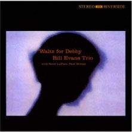
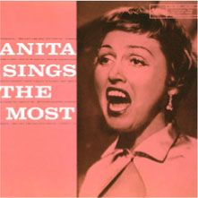
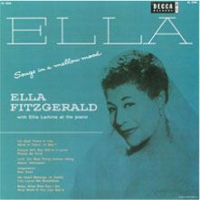
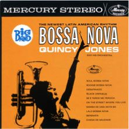
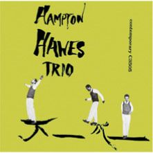
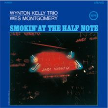
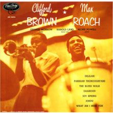
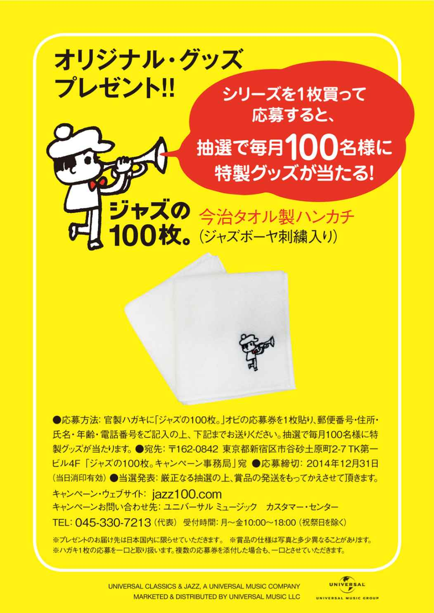

| ユニバーサルミュージック「ジャズの100枚。」カタログ | |
| Unknown | |
ジャズという音楽は、
19世紀末にアメリカ南部の街ニューオリンズで誕生しました。
そして、1917年に初めてジャズのレコードが録音されてから、
間もなく100年になります。
100年の年月の中で生まれた名盤を、
ここに100枚集めてみました。
ロマンティックなピアノ。
翳りのあるトランペット。
くつろぎのギター。
激しいビートを刻むドラムス。
ジャズは即興で演奏を紡いでいく音楽。
ですから、同じ曲でも二度と同じ演奏にはなりません。
だからこそ、それぞれのアルバムには、
ミュージシャンの個性やドラマが詰まっています。
そして、アコースティックならではの温もりのあるサウンドは、
それが半世紀以上も前に録音されたものであっても、
あなたの心に自然に寄り添います。
ジャズをまだ聴いたことがない方も、
ジャズって難しそう、と思っている方も、
一篇の小説を読むように、一本の映画を観るように、
どうぞ気軽に触れてみてください。
あなたも、きっと好きになるはず。
ようこそ、ジャズの100枚。へ
 ジャズといえばクール、というあなたに。
ジャズといえばクール、というあなたに。（詳細ページへ）のアイコンをクリックすると、その書籍のAmazon.co.jp商品詳細ページへとびます。
※iPhone、iPod Touch、iPad用のKindleアプリからは、このリンクはご利用いただけません。
誰かに影響を与えようとは思ったことがない。
ただ心の望むままに演奏し続けてきただけなんだ。
（ビル・エヴァンス）
ワルツ・フォー・デビイ
／ ビル・エヴァンス

ピアノの詩人ビル・エヴァンスが残したモダン・ジャズ史上最大の人気を誇る名作。優しくロマンティックなメロディが、名門ジャズ・クラブ、ヴィレッジ・ヴァンガードのざわめいた雰囲気の中へ溶けていき、奇跡のように美しい演奏が生まれた。愛らしいタイトル曲は永遠の感動を呼ぶ。
UCCO-99001 （Riverside） ピアノ

メンバーはすべて私が選んだの。
クリフォードは最高のプレイをしてくれたわ。
（ヘレン・メリル）
ヘレン・メリル・ウィズ・クリフォード・ブラウン
"ニューヨークのため息"ヘレン・メリルの最高傑作。＜ ユード・ビー・ソー・ナイス・トゥ・カム・ホーム・
トゥ＞ は彼女の代表的名唱。トランペットのクリフォード・ブラウンも文句なしの快演。デリケートなハスキー・ヴォイスが、繊細な心の 襞 を歌いあげる。
UCCU-99003 （EmArcy） ヴォーカル／トランペット

ソニーはとても知的で愉快な男で、一緒に演奏していると
心がうきうきしたものさ。
（バディ・デフランコ）
クール・ストラッティン ／ ソニー・クラーク
日本人が愛したタイトル曲をはじめ、ジャズ・ファンを虜にした哀愁のメロディが詰まった永遠のベストセラー。ソニー・クラークのブルージーなタッチ、あまりにも有名な"足ジャケット"など、全てが最高水準を行くモダン・ジャズの決定盤。
UCCU-99006 （Blue Note） ピアノ

ジャズを理屈で分析しようとするのにはうんざりさせられる。
そうではないんだ。感覚なんだ。
（ビル・エヴァンス）
ポートレイト・イン・ジャズ ／ ビル・エヴァンス
／ ビル・エヴァンス
ビル・エヴァンスが天才ベーシスト、スコット・ラファロと出会った最初の記録。ピアノ・トリオが織りなすスリルと緊張感に満ちたインタープレイが凄い。名高い＜ 枯葉＞ を収録した歴史に残る大傑作。
UCCO-99003 （Riverside） ピアノ
この時期、いろんなミュージシャンと知り合うことができた。
このアルバムはお気に入りの1枚だね。
（アート・ペッパー）
アート・ペッパー・ミーツ・ザ・リズム・セクション

西海岸を代表するアルト奏者アート・ペッパーと、マイルス・デイヴィス・グループのリズム・セクションによる一期一会の名セッション。素晴らしいバックを得て、冒頭の＜ ユード・ビー・ソー・ナイス・トゥ・カム・ホーム・トゥ＞ から、アドリブに天才的な閃きを見せる。
UCCO-99004 （Contemporary） サックス
必要最小限の息しか、マウスピースに吹き込まない。
出したい音だけを吹き込むんだ。
（チェット・ベイカー）
チェット・ベイカー・シングス
永遠不滅のヒーロー、チェット・ベイカーが残した大人気盤。この曲の代名詞とも言われる＜ マイ・ファニー・ヴァレンタイン＞ の決定的名唱を収録。甘く切ないため息のようなヴァレンタインは、時代を超えて愛され続けている。
UCCU-99029 （Pacific Jazz） ヴォーカル／トランペット
歌うように楽器をプレイしたいなら、サックスがいい。
いちばん肉声に近い楽器だからだ。
（スタン・ゲッツ）
スタン・ゲッツ・プレイズ
最高の実力を持つ白人テナー奏者スタン・ゲッツ初期の代表作。美しい音色で自在にメロディを崩しながら即興的に繰り出すアドリブの妙技に魅了される。＜ ボディ・アンド・ソウル＞ の優雅なバラードは至高の名演。子供と頬を寄せ合う愛らしいカヴァー・デザインも印象的。
UCCU-99030 （Verve） サックス

本当にやりたいことがあって、そこに愛と直感があれば、
あなたの行く道は決して間違っていない。
（エラ・フィッツジェラルド）
エラ・アンド・ルイ ／ エラ・フィッツジェラルド＆
ルイ・アームストロング
"ジャズの王様"ルイ・アームストロングと"ファースト・レディ"エラ・フィッツジェラルドによる究極のデュエット・アルバム。二人が持ち味を発揮して、楽しさ溢れる極上のパフォーマンスを披露。バックは、オスカー・ピーターソン・トリオにバディ・リッチが加わるという超贅沢な布陣。
UCCU-99032 （Verve） ヴォーカル／トランペット

音楽は私にとって熱病のようなもの。
一生、切り離すことができないの。
（ペギー・リー）
ブラック・コーヒー ／ ペギー・リー
時代を超えて聴き継がれている名歌手ペギー・リーの大人気盤。少しハスキーがかった声で、女心の切なさをアンニュイに歌い上げるタイトル曲が絶品。＜ ラヴ・ミー・オア・リーヴ・ミー＞ で魅せるちょっと色っぽくてキュートな表情もたまらない。
UCCU-99033 （Decca） ヴォーカル

私はシンガーではないの。
ソング・スタイリストよ。
（アニタ・オデイ）
アニタ・シングス・ザ・モスト ／ アニタ・オデイ

白人女性ジャズ・ヴォーカルの最高峰アニタ・オデイの最高傑作。オスカー・ピーターソン・カルテットをバックに、スキャットを駆使したアップテンポ・ナンバーからしっとり聴かせる美しいバラードまで、ワン＆ オンリーなアニタ節が絶好調。
UCCU-99041 （Verve） ヴォーカル

ヒップ （かっこいい） かどうか、
それが肝心なんだ。
（リー・モーガン）
ザ・サイドワインダー ／ リー・モーガン
ザ・ビートルズ米国上陸の年にヒット・チャートを駆け上った"ジャズ・ロック"の金字塔。不世出の天才トランペッター、リー・モーガンのダンディズムが迸る人気盤中の人気盤。ダンサブルなタイトル曲、美メロの＜ トーテム・ポール＞ など魅力的なオリジナルを多数収録。
UCCU-99043 （Blue Note） トランペット

原曲に敬意を払いながらプレイした。
「メロディはどこ？」と困惑させないようにね。
（アンドレ・プレヴィン）
マイ・フェア・レディ ／ シェリー・マン
大ヒット・ミュージカル「マイ・フェア・レディ」の音楽を、アンドレ・プレヴィンのピアノを中心とするトリオ編成で録音したジャズ史に残る大ベストセラー。
＜ 一晩中踊れたら＞ 、＜ 君住む街で＞ といったスタンダード・ナンバーが小気味よくスウィングする。
UCCO-99014 （Contemporary） ドラムス／ピアノ
歌は独学なの。誰かに習っていたら、
こんなヴォーカル・スタイルにはならなかったでしょうね。
（ジュリー・ロンドン）
彼女の名はジュリー Vol. 1 ／ ジュリー・ロンドン
ミリオンセラーの＜ クライ・ミー・ア・リヴァー＞ を収録した記念すべきファースト・アルバム。ギターとベースだけというシンプルな編成をバックに、洗練されたセンスと情感豊かな歌声が味わえる。妖艶なジャケット・カヴァーも魅力。
UCCU-99049 （Liberty） ヴォーカル

私は何をプレイするにせよ、
いつもメロディを考えてプレイするよう心がけている。
（パット・メセニー）
オフランプ ／ パット・メセニー・グループ
名曲＜ ついておいで＞ 、＜ ジェームス＞ を含むパット・メセニー80年代の代表作。グラミー賞ベスト・ジャズ・フュージョン・パフォーマンス賞受賞。ポップからアヴァンギャルドまでパットの抒情豊かな音楽性を前面に押し出した作品。ギター・シンセサイザーを導入しつつも、アコースティックで印象的なサウンドに仕上げている。
UCCU-99056 （ECM） ギター／フュージョン

ブルースはジャズにおけるイースト菌のようなもの。
それがなくてはおいしく味わえないのよ。
（カーメン・マクレエ）
ブック・オブ・バラーズ ／ カーメン・マクレエ

名歌手カーメン・マクレエが絶頂期に録音した傑作バラード・アルバム。ピアノ・トリオとストリングスをバックに、ソフトでコントロールの効いた知的な歌唱を聴かせる。中でもマット・デニスの名曲＜ エンジェル・アイズ＞ のデリケートな表現が素晴らしい。
UCCU-99059 （Kapp） ヴォーカル

いつも好奇心をもって、学ぶ姿勢を忘れないでいたい。
巨匠扱いはされたくない。
（チック・コリア）
クリスタル・サイレンス ／ チック・コリア＆
ゲイリー・バートン
チック・コリアのピアノとゲイリー・バートンのヴィブラフォンが織りなす透明な音の会話。繊細なピアノ・タッチとクリスタルなヴァイブ・サウンドが、ピュアな音世界を作り出す。スパニッシュなオリジナル＜ セニョール・マウス＞ の躍動感が素晴らしい。
UCCU-99067 （ECM） ピアノ／ヴィブラフォン

美しさや優れた性質を備えたものがあれば、他のあらゆるものを
犠牲にしてでもそれを追いかける。
（ビル・エヴァンス）
ムーンビームス ／ ビル・エヴァンス
スコット・ラファロを事故で失ったビル・エヴァンスが、新しいベーシスト、チャック・イスラエルを迎えた新トリオで録音した復活作。甘美でロマンティックなバラードを中心に耽美なプレイを聴かせる美しいアルバム。官能的な美女のジャケットも魅力。
UCCO-99022 （Riverside） ピアノ
生涯、アニタは徹底的にヒップなジャズ・シンガーで通した。
（音楽評論家 ジョージ・サイモン）
ジス・イズ・アニタ ／ アニタ・オデイ
スウィンギーなビッグ・バンドに乗って小粋に歌うアニタ・オデイの魅力がいっぱい詰まった大名盤。オープニングの＜ ユーアー・ザ・トップ＞ から姉御肌で気風のいいヴォーカルは100%全開。最高に痛快なジャズ・ヴォーカル・アルバム。
UCCU-99069 （Verve） ヴォーカル

歌を歌っていると、トラブルが肩から降りて
楽な気持ちになるの。
（サラ・ヴォーン）
枯葉 ／ サラ・ヴォーン
ヴォーカリストとして円熟の境地にあったサラ・ヴォーン、パブロ時代の傑作。70年代を代表する最高のジャズ・ヴォーカル・アルバム。スキャットで押し切ったタイトル曲、ミディアム・テンポで自在にフェイクする＜ 時さえ忘れて＞ 、全てが完璧。ローランド・ハナ、ジョー・パスも好サポート。
UCCO-99024 （Pablo） ヴォーカル
私の生活はシンプル。人前に出て歌を歌う、それだけだ。
だって私はシンガーなのだから。
（トニー・ベネット）
トニー・ベネット＆
ビル・エヴァンス
現役最高のヴォーカリスト、トニー・ベネットとジャズ・ピアノの詩人ビル・エヴァンスが共演した美しいデュオ・アルバム。類まれなる個性の邂逅が叙情的かつ情熱的なジャズ・ヴォーカルの傑作を生み出した。＜ ワルツ・フォー・デビイ＞ 、＜ マイ・フーリッシュ・ハート＞ の詩情が心に沁みる。
UCCO-99027 （Fantasy） ヴォーカル／ピアノ

akiko ジャズ・シンガー
アニタ・シングス・ザ・モスト
／アニタ・オディ
モダンで小粋なアニタの歌声の魅力のみならず、オスカー・ピーターソン・カルテットが最高にスウィングしていてお洒落。
沖野修也 （KYOTO JAZZ MASSIVE） DJ／クリエイティヴ・ディレクター
至上の愛
／ジョン・コルトレーン
音楽を超えた芸術。宗教的ですらある。深淵な音世界は、ジャズが魂のコミュニケーションである事を教えてくれるだろう。
人間性は、その人物が
プレイする音楽にあらわれる。
（オスカー・ピーターソン）
プリーズ・リクエスト ／ オスカー・ピーターソン・トリオ
"鍵盤の皇帝"オスカー・ピーターソンが、ファンのリクエストに応え、人気スタンダードやボサ・ノヴァを取り上げたヴァーヴ最終作。パワフルで軽やかでスピーディーな演奏は聴いていると心が弾んでくる。ジャズ入門としても、おススメの一枚。加えて優秀録音賞受賞作品。
UCCU-99005 （Verve） ピアノ
「ピアノをプレイするな。ピアノにプレイさせるんだ」。
アート・テイタムに言われたひとことが忘れられない。
（レッド・ガーランド）
グルーヴィー ／ レッド・ガーランド
マイルス・デイヴィス・バンドのピアニストとして活躍したレッド・ガーランドが自己のグループで録音したピアノ・トリオの傑作。冒頭を飾る＜ Cジャム・ブルース＞ のスウィンギーな快演が聴きもの。右手のシンプルなシングル・トーンと軽めのブロック・コードの絶妙な組み合わせが心地よい。
UCCO-99005 （Prestige） ピアノ
サラはスタンダード・ナンバーに、これまで誰もやったことがない
味付けを施すんだ。
（チック・コリア）
サラ・ヴォーン・ウィズ・クリフォード・ブラウン
驚異的な声域と独特のフレージングで他の追随を許さないジャズ・ヴォーカルの女王サラ・ヴォーン初期の代表作。＜ バードランドの子守唄＞ の巧みなスキャットはこの曲の名唱の一つとされる。夭折の天才トランペッター、クリフォード・ブラウンとの器楽的な掛け合いも素晴らしい。
UCCU-99017 （EmArcy） ヴォーカル

私は自分がこれまでやってきたどんなことに関しても
ゆるぎない信念を持っている。
（キース・ジャレット）
星影のステラ ／ キース・ジャレット・トリオ
ピアノ・ジャズの新時代を築いたキース・ジャレットのスタンダード・トリオによる初のライヴ盤。名曲への深い理解と斬新な解釈が素晴らしい。どの曲でも静謐な官能美溢れる名演を聴かせる。＜ オールド・カントリー＞ など隠れた名曲にスポットを当てた功績も大きい。
UCCU-99021 （ECM） ピアノ
個性を打ち立てるのは大変だ。でもその道の第一人者は、
替えの利かない独自のスタイルを持っている。
（アート・ペッパー）
モダン・アート ／ アート・ペッパー
アルト・サックスの巨人アート・ペッパーが、西海岸の名手を従えワン・ホーンで録音したこのアルバムは、アドリブ芸術の頂点を記録した作品としても名高い。明るい気分に満ち溢れたセッションの中で、美しくメロディアスなソロが途切れることなく紡がれていく。
UCCU-99034 （Intro） サックス

私にとって演奏することは考えることであり、
語りかけることであり、コミュニケイトすることなんだ。
（ライオネル・ハンプトン）
スターダスト ／ ライオネル・ハンプトン
この上なくロマンティックな名曲＜ スターダスト＞ には幾多の名演があるが、中でもライオネル・ハンプトンによるライヴ・ヴァージョンは傑作の誉れが高い。ハンプトン、チャーリー・シェイヴァース、スラム・スチュアートといったスウィング時代を代表するアーティストたちの華麗な名人芸が堪能できる。
UCCU-99039 （Decca） ヴィブラフォン
ウィントンくらい魅力的なサウンドの持ち主は、
彼の前にも後にもいない。
（ジミー・コブ）
ケリー・ブルー ／ ウィントン・ケリー
／ ウィントン・ケリー
ハード・バップ・シーンの人気ピアニスト、ウィントン・ケリーの親しみやすい超人気盤。セクステットによるファンキーなタイトル曲はジャズ喫茶でも大ヒット。ブルージーな哀愁を漂わせた＜ 朝日のようにさわやかに＞ は、ブルーノートのソニー・クラーク盤と双璧をなすピアノ・トリオもう一つの名演。
UCCO-99011 （Riverside） ピアノ

チャーリー・パーカーの演奏を聴いて、
「こんな風にトランペットを吹きたい」と思ったんだ。
（ケニー・ドーハム）
静かなるケニー ／ ケニー・ドーハム
美しい音色と哀愁に満ちたフレーズで多くのファンを持つケニー・ドーハム不朽の名作。トミー・フラナガン・トリオをバックに、代表的オリジナル＜ 蓮の花＞ や＜ アローン・トゥゲザー＞ の詩情をワン・ホーンで切々と歌い上げる。特に日本人に愛されたプレスティッジ（ニュージャズ）の大人気盤。
UCCO-99012 （Prestige／New Jazz） トランペット

ありったけのアイデアを使って、1台のピアノから
あらん限りの可能性を引き出したい。
（オスカー・ピーターソン）
ナイト・トレイン ／ オスカー・ピーターソン・トリオ
オスカー・ピーターソンのキャリアで最高のメンバーと言われる"ザ・トリオ"によって吹き込まれたロングセラー・アルバム。＜ Cジャム・ブルース＞ 、＜ 我が心のジョージア＞ 、＜ 昔は良かったね＞ などの人気スタンダードに加え、ピーターソン畢生のオリジナル曲＜ 自由への賛歌＞ の感動的名演を収録。
UCCU-99042 （Verve） ピアノ

どこにでもいそうな風貌なのに、
誰の追随も許さないプレイをする。
（ニューヨーク・マガジン）
ヴァーチュオーゾ ／ ジョー・パス
ジャズ・ギターの神様ジョー・パスが、おなじみのスタンダードを無伴奏ソロで演奏した最高傑作。豊かなイマジネーション、柔軟なリズム感、そして超絶技巧、ギター一本とは思えないゴージャスなサウンドに驚嘆する。ヴァーチュオーゾ（巨匠）のタイトルにふさわしい名盤。
UCCO-99015 （Pablo） ギター

オレの音楽がどういうものかだって？
教えてやろうか。かっこいい音楽のことだ。
（マイルス・デイヴィス）
リラクシン ／ マイルス・デイヴィス
1956年の有名なマラソン・セッション4部作の中で、最も完成度が高いと言われる作品。マイルス・デイヴィスは１曲を除き、すべてミュート（消音器）を付けて演奏。６曲中３曲がミュージカル・ナンバー。レッド・ガーランドのおなじみのイントロ・フレーズから始まる＜ イフ・アイ・ワー・ア・ベル＞ のリラックスした雰囲気が最高。
UCCO-99016 （Prestige） トランペット

ピアノ・トリオは面白い。ビッグ・バンドのような響きから、
すごく静かな瞬間まで表現できるんだ。
（マッコイ・タイナー）
バラードとブルースの夜 ／ マッコイ・タイナー
若き日のマッコイ・タイナーがインパルスに残した6枚のリーダー作の中で、最も寛いだ雰囲気を持つ人気盤。モンク、エリントンのナンバーから＜ 酒とバラの日々＞ といったおなじみのスタンダードまで、ブルース・フィーリングに満ちた繊細な表現力で弾きこなしている。
UCCU-99053 （Impulse!） ピアノ

ウェスの演奏はすべて即興であり、スウィングし、
いかなるときもジャズそのものだった。
（ジョー・パス）
インクレディブル・ジャズ・ギター ／ ウェス・モンゴメリー
ジャズ・ギターの革命児ウェス・モンゴメリーが、持てる力の全てを発揮した驚異的（インクレディブル）な傑作。ピックを使わず親指で温かい音色を鳴らし、独特のオクターヴ奏法やコード奏法を駆使して快演を聴かせる。オリジナルの＜ フォア・オン・シックス＞ がいい。
UCCO-99018 （Riverside） サックス

ジャズは世界の言語だ。どこに住もうが、どの国籍であろうが
関係ない。大切なのは君が何をプレイしたいかだ。
（アート・ファーマー）
モダン・アート ／ アート・ファーマー
まろやかで心地よい音色を聴かせる人気トランペッター、アート・ファーマーの最高傑作。ビル・エヴァンス、ベニー・ゴルソンら共演陣も豪華。美しいハーモニーを持つ名曲＜ フェア・ウェザー＞ を提供するゴルソンとは後に有名な"ジャズテット"を結成。
UCCU-99060 （United Artists） トランペット
ジャンゴ・ラインハルトの演奏を
コピーしたことは実は一度もないんだ。
（ジョー・パス）
フォー・ジャンゴ ／ ジョー・パス
ジャズ・ギターの"ヴァーチュオーゾ"として名声を博したジョー・パスが、敬愛するジャンゴ・ラインハルトへ捧げた作品で彼のキャリアを代表する傑作。リズム・ギターを含むシンプルな編成をバックに、センシティヴで歌心溢れる妙技を聴かせる。
UCCU-99062 （Pacific Jazz） ギター

自分の楽器だけではなく、他の楽器や伴奏の仕方も
知らなければならない。それがジャズだからだ。
（オスカー・ピーターソン）
ザ・トリオ～オスカー・ピーターソン・トリオの真髄
ジャズ史上屈指の名ピアニスト、オスカー・ピーターソンが、レイ・ブラウン、エド・シグペンによる黄金の"ザ・トリオ"でシカゴのジャズ・クラブ、ロンドン・ハウスに出演した時の実況録音盤。抜群に息があった3人によるスウィンギーなプレイが最高。
UCCU-99065 （Verve） ピアノ
スタンダード・ナンバーのコード進行に合わせて、
新しいメロディをプレイするのは大きな喜びだ。
（ジム・ホール）
ジャズ・ギター ／ ジム・ホール
現代ジャズ・ギターの巨匠ジム・ホールの記念すべき初リーダー作。カール・パーキンス、レッド・ミッチェルというウエスト・コースト・ジャズの名手が参加したギター・トリオ録音。シンプルで洗練された演奏の中、ジャズ・ギターの可能性を広げた技巧が光る。
UCCU-99070 （Pacific Jazz） ギター

マイルス・デイヴィスやビリー・ホリデイが、
私の演奏を観に訪れたものだよ。
（アーマッド・ジャマル）
バット・ノット・フォー・ミー ／ アーマッド・ジャマル
帝王マイルス・デイヴィスに影響を与えた"間の達人"アーマッド・ジャマルの傑作ライヴ盤。地元シカゴのパーシング・ラウンジでリラックスしたトリオ演奏を聴かせる。全米ヒット・チャートで最高3位を記録。
UCCU-99072 （Argo） ピアノ

ブルー・ミッチェルは彼の世代の中で
最もメロディアスな演奏家だ。
（ジミー・ヒース）
ブルーズ・ムーズ ／ ブルー・ミッチェル
ホレス・シルヴァー・グループで活躍したトランペッター、ブルー・ミッチェルがウィントン・ケリー・トリオをバックにワン・ホーンで録音した代表作。独特の哀感をこめてしなやかに歌い上げる＜ アイル・クローズ・マイ・アイズ＞ は、さわやかな余韻を残す名演。
UCCO-99026 （Riverside） トランペット

やかましいノイジーなものは嫌いだ。
甘美で芳しきものこそ豊かですばらしいのだ。
（レスター・ヤング）
プレス・アンド・テディ ／ レスター・ヤング＆
テディ・ウィルソン
／ レスター・ヤング＆
テディ・ウィルソン
プレス（大統領）ことレスター・ヤングの晩年を飾る傑作。30年代に多くの共演録音を残した黄金コンビ、テディ・ウィルソンとの再会セッション。モダン・スウィング派の2人が、リラックスした雰囲気の中で＜ オール・オブ・ミー＞ など、スタンダードの名曲を演奏。
UCCU-99073 （Verve） サックス／ピアノ
菊地成孔
音楽家／文筆家
クールの誕生
／マイルス・デイヴィス
マイルスの作品の中でも「傑作だというからガイドに載せるけどオレはあんま解らないな」というツイストした冷遇のされ方をしている一枚ですが、今聴くと普通に傑作。
小西康陽
音楽家
ジャズという以上にポピュラー音楽のターニングポイントとなったアルバムだと思っています。
実質的なリーダーはマイルスだった。彼のおかげで、
この美しいアルバムが生まれた。
（ハンク・ジョーンズ）
サムシン・エルス ／ キャノンボール・アダレイ＆ マイルス・デイヴィス
歴史を超え、ジャンルを超え、音楽史上に輝く不滅の一枚。マイルス・デイヴィス絶妙のミュート・トランペット・ソロで知られる圧倒的人気曲＜ 枯葉＞ が有名。奔放なキャノンボール・アダレイのアルト、ハートフルなハンク・ジョーンズのピアノなど、心に余韻が残る大傑作。
UCCU-99001 （Blue Note） サックス／トランペット
僕は楽しく、喜びをもたらすような
プレイをしていきたいんだ。
（ジョン・コルトレーン）
バラード ／ ジョン・コルトレーン
超ロングセラーを続けるジョン・コルトレーンのバラード・アルバム。シンプルで情緒豊かなメロディを、おなじみのレギュラー・カルテットをバックにじっくりと聴かせる。冒頭の＜ セイ・イット＞ は、生涯の名演となった。
UCCU-99002 （Impulse!） サックス

私は自分で創造できる人間とは思わない。
しかし創造の道は目指している。私は創造の神を信じる。
（キース・ジャレット）
ザ・ケルン・コンサート ／ キース・ジャレット
歴史に残る完全即興ソロ・コンサートの伝説的記録。無限のイマジネーションが繰り広げる最高の瞬間芸術。メロディ、ハーモニー、リズム全てに格別の美しさが漂う。ジャズにとどまらず、全ての音楽ファンに聴き継がれている大傑作。
UCCU-99004 （ECM） ピアノ

私はビリーの歌い方が好きだ。彼女の歌はいつも
ホーン
（管楽器）
のように響いてくる。
（マイルス・デイヴィス）
奇妙な果実 ／ ビリー・ホリデイ
不世出の天才ジャズ・ヴォーカリスト、ビリー・ホリデイが残した最高傑作。人種差別を告発したタイトル曲は有名。怒りをコントロールし、淡々としたフレージングの中に喜怒哀楽を織り込めた見事な歌唱は、時代を超えて胸に迫る。
UCCU-99011 （Commodore） ヴォーカル

良い曲を書き、良い演奏をしていれば何の心配もない。
スウィングしていればそれでいいんだ。
（ルイ・アームストロング）
この素晴らしき世界 ／ ルイ・アームストロング
サッチモの愛称で親しまれた20世紀を代表するエンターテイナー、ルイ・アームストロング。しわがれた独特の温もりある歌声と親しみやすいキャラクターで世界中に愛された。タイトル曲は映画『グッドモーニング, ベトナム』にも使われ大ヒット。
UCCU-99016 （Decca） ヴォーカル／トランペット

ソニー・ロリンズのバンドで演奏していたとき、ビルがやって来て
「一緒に録音してくれないか」と尋ねた。
（ジム・ホール）
アンダーカレント ／ ビル・エヴァンス＆
ジム・ホール
ジャズ・ピアノの詩人ビル・エヴァンスと流麗なフレーズを奏でる名ギタリスト、ジム・ホールが織りなす究極のインタープレイ。ジャズが表現できる最高の美しさを捉えた歴史的名盤。＜ マイ・ファニー・ヴァレンタイン＞ は必聴。
UCCU-99019 （United Artists） ピアノ／ギター

ジョニー・ハートマンは素晴らしいシンガーだね。
また共演したいな。
（ジョン・コルトレーン）
ジョン・コルトレーン・アンド・ジョニー・ハートマン
情緒豊かなバリトン・ヴォイスを持つジョニー・ハートマンが、歌心溢れるジョン・コルトレーンのテナー・サックスと共演した傑作。クルーナーとして最高の歌唱を聴かせる＜ マイ・ワン・アンド・オンリー・ラヴ＞ が秀逸。
UCCU-99023 （Impulse!） サックス／ヴォーカル
彼の演奏には必然性があるんだ。
（マイルス・デイヴィス）
モントルー・ジャズ・フェスティヴァルのビル・エヴァンス
モントルー・ジャズ・フェスの名前を世界的に広めた傑作ライヴ盤。ジャック・ディジョネットの参加によって、ビル・エヴァンス・トリオの作品の中でも、いつもよりクールで躍動感が漲るアグレッシヴな演奏となった。心に沁みるソロ演奏も素晴らしい。
UCCU-99026 （Verve） ピアノ

クリフォードは私に決定的な影響を与えた。
（ソニー・ロリンズ）
クリフォード・ブラウン・ウィズ・ストリングス
夭折の天才トランペッター、クリフォード・ブラウンが、ニール・ヘフティのアレンジ／指揮によるストリングスをバックに、名曲を朗々と歌い上げたバラード・アルバム。＜ スターダスト＞ 、＜ 煙が目にしみる＞ など、どの曲も情緒豊かで味わい深い。
UCCU-99027 （EmArcy） トランペット

私は共演者の演奏に耳を傾けることを好む。
その影響が自身のプレイに反映されるからだ。
（ジェリー・マリガン）
ナイト・ライツ ／ ジェリー・マリガン
／ ジェリー・マリガン
50年代に一世を風靡した西海岸を代表するバリトン・サックス奏者ジェリー・マリガンが残したロマンティックでムーディーな作品。トランペッター、アート・ファーマーのリリカルな音色と温かなマリガンのサウンドとの調和が素晴らしい。
UCCU-99028 （Universal） サックス

私は感じたままにプレイしている。
私にとって演奏は人生そのものなんだ。
（エロール・ガーナー）
ミスティ ／ エロール・ガーナー
ジャズ・スタンダードで最も美しいメロディを持つ神秘的な名曲＜ ミスティ＞ 。本作には、作者エロール・ガーナー自身による初演を収録。彼は"ビハインド・ザ・ビート"と呼ばれる独特なスタイルで、寛ぎのあるスウィンギーな演奏を聴かせた名ピアニストだった。
UCCU-99031 （Mercury） ピアノ

必要なのは才能じゃない。
練習、練習、練習、それだけだ。
（マイルス・デイヴィス）
クッキン ／ マイルス・デイヴィス
1956年の有名なマラソン・セッション4部作の中で、最も高い人気を誇るアルバム。美しいミュート・プレイが冴える愛奏曲＜ マイ・ファニー・ヴァレンタイン＞ の初演を記録。他にもこの時期の帝王マイルス・デイヴィスの充実ぶりを裏付ける屈指の名演が続く。
UCCO-99009 （Prestige） トランペット

ジャンゴ・ラインハルトは素晴らしいミュージシャンであり、
最もパワフルなギタリストだ。
（ジョン・ルイス）
ジャンゴ ／ モダン・ジャズ・カルテット
天才ギタリスト、ジャンゴ・ラインハルトに捧げたタイトル曲の初演を収めたMJQの古典的名作。格調高い室内楽風のサウンドは、多くのクラシック・ファンをジャズに引き込んだ。本作は52年に結成されたオリジナル・メンバーによる3つのセッションを収録。
UCCO-99010 （Prestige） ピアノ／ヴィブラフォン

作曲家の使う言語を使って、
彼らにささやかな贈り物をしたいんだ。
（キース・ジャレット）
スタンダーズ Vol. 1 ／ キース・ジャレット・トリオ
現代ピアノ・トリオの礎を築いたスタンダード・トリオの第1弾。キース・ジャレットはゲイリー・ピーコック、ジャック・ディジョネットと共に、スタンダード・ナンバーに斬新な息吹を吹き込んだ。＜ オール・ザ・シングス・ユー・アー＞ など、おなじみのメロディが変幻自在に展開していく。
UCCU-99036 （ECM） ピアノ
即興というのは音楽の中で瞬間のリアリティを
表現する最もディープな手法なんだ。
（キース・ジャレット）
スタンダーズ Vol. 2 ／ キース・ジャレット・トリオ

現代ピアノ・トリオの礎を築いたスタンダード・トリオの第2弾。キース・ジャレットはゲイリー・ピーコック、ジャック・ディジョネットと共に、スタンダード・ナンバーに斬新な息吹を吹き込んだ。『Vol. 2』には、絶品のオリジナル・ナンバー＜ ソー・テンダー＞ を収録。
UCCU-99037 （ECM） ピアノ

絶対に満足しないこと。これでいいと思わないこと。
それが私の信条だ。
（デューク・エリントン）
デューク・エリントン＆
ジョン・コルトレーン
世代を超えた二人のジャズ・ジャイアンツが一期一会で残した名演。エリントンの代表曲＜ イン・ア・センチメンタル・ムード＞ の儚げな語らいが美しい。名作『バラード』と同じくジョン・コルトレーンが残した情緒豊かな傑作。
UCCU-99046 （Impulse!） ピアノ／サックス
苦労して形になったものを私は信用する。
（ビル・エヴァンス）
ホワッツ・ニュー ／ ビル・エヴァンス・ウィズ・ジェレミー・スタイグ
新進フルート奏者ジェレミー・スタイグとジャズ・ピアノの詩人ビル・エヴァンスによる傑作共演盤。冒頭の＜ ストレート・ノー・チェイサー＞ からスリリングなインタープレイが飛び出す。エヴァンス・トリオもエモーショナルで刺激的な熱演を繰り広げる。
UCCU-99047 （Verve） ピアノ／フルート
彼女は独特のイントネーションを持っていた。
それも素晴らしい個性だったんだ。
（コンテ・カンドリ）
サムシング・クール ／ ジューン・クリスティ
クール・ジャズを代表するビッグ・バンド、スタン・ケントン楽団出身の白人女性ジャズ・ヴォーカリストで、清楚さと知性を合わせ持つジューン・クリスティ生涯の最高傑作。バド・シャンク、バーニー・ケッセル、シェリー・マンら名手を擁したピート・ルゴロ楽団のバックも絶妙。
UCCU-99055 （Capitol） ヴォーカル

物事に不可能はないんだ。
もし君が望むならね。
（レイ・ブライアント）
レイ・ブライアント・トリオ
哀愁とロマンに満ちた名曲＜ ゴールデン・イヤリングス＞ でジャズ・ファンの心を虜にしたピアニスト、レイ・ブライアントの代表作。彼が歌伴を務めていたカーメン・マクレエの名唱でも知られる＜ エンジェル・アイズ＞ のソロ演奏、気品に満ち溢れた＜ ジャンゴ＞ などブルージー&センチメンタルな快演を聴かせる。
UCCO-99020 （Prestige） ピアノ
いろんな音楽を自分の中に取り入れたけれど、
最も多く"盗んだ"のは管楽器の響きね。
（エラ・フィッツジェラルド）
ソングス・イン・ア・メロウ・ムード ／ エラ・フィッツジェラルド

13回のグラミー賞に輝いたジャズ界の"ファースト・レディ"エラ・フィッツジェラルドの抒情的な一面にスポットを当てた一枚。名手エリス・ラーキンスのピアノをバックに美しいバラードなどを優しく柔らかに歌い込む。＜ スターダスト＞ のソフィスティケイテッドな名唱が心に沁みる。
UCCU-99066 （Decca） ヴォーカル
寺井尚子 ジャズ・ヴァイオリニスト
ワルツ・フォー・デビイ
／ビル・エヴァンス
強く美しいメロディが放つクオリティの高さと透明感。導かれるように手にした私のファーストJAZZ。
堀込高樹
KIRINJI
ザ・ケルン・コンサート
／キース・ジャレット
テンションコードもブルーズも感じられないけど、ジャズを感じる。弾く人のタッチこそが、それがジャズか、そうではないかを決定するのだ、なんて思ったりして。
私は音楽から得られることすべてを学びたいし、
そこにつながるすべてのことに真摯でいたいんだ。
（ソニー・ロリンズ）
サキソフォン・コロッサス ／ ソニー・ロリンズ
巨匠ソニー・ロリンズの名声を決定づけた人気＆ 知名度抜群の大名盤。"サキコロ"の愛称で親しまれる。豪放なトーン、歌心溢れるアドリブ、あらゆる時代を超えて聴き継がれる最高傑作。有名な＜ セント・トーマス＞ 、＜ モリタート＞ 他、全曲必聴。
UCCO-99002 （Prestige） サックス
このアルバムで、私は喜びと美を追求する
原点に立ち返った。
（チック・コリア）
リターン・トゥ・フォーエヴァー ／ チック・コリア
70年代フュージョン・ミュージックの扉を開いたチック・コリアの大ヒット作。バンド名は"自然への回帰"を意味し、明るく開放的で生命力に満ちたサウンドは、多くのファンの心を掴んだ。名曲＜ ラ・フィエスタ＞ 、＜ クリスタル・サイレンス＞ 収録。
UCCU-99008 （ECM） フュージョン
普段の私はとてもシャイで、人前に出るのが苦手なの。
だけどステージに立つとすべてを忘れる。
（エラ・フィッツジェラルド）
マック・ザ・ナイフ～エラ・イン・ベルリン ／ エラ・フィッツジェラルド
ジャズ界の"ファースト・レディ"エラ・フィッツジェラルドが残したジャズ・ヴォーカル史上最も有名なライヴ盤。ホットなスキャットで乗りまくる＜ ハウ・ハイ・ザ・ムーン＞ 、サッチモの物真似も楽しい＜ マック・ザ・ナイフ＞ などで、圧倒的なステージ・パフォーマンスを披露する。
UCCU-99014 （Verve） ヴォーカル

目がちかちかするから譜面は読まない。
私は一度聴いただけで曲を覚えてしまうんだ。
（ジミー・スミス）
ザ・キャット ／ ジミー・スミス
ジャズ・オルガンのスター、ジミー・スミスがラロ・シフリン編曲のオーケストラを得て、映画音楽などをダイナミックに演奏。全米ポップ・チャート12位にランクインした大ヒット・アルバム。タイトル曲はジミーの生涯を代表するナンバーとなった。
UCCU-99018 （Verve） オルガン

私たちはいつも通り、聴衆の前で、音楽にノること以外何も考えず、狂ったように演奏した。
（ジョニー・グリフィン）
フル・ハウス ／ ウェス・モンゴメリー
／ ウェス・モンゴメリー
ギター界の革命児ウェス・モンゴメリーの白熱したステージを捉えた傑作ライヴ盤。オクターヴ奏法など得意の超絶技巧で、テナーの王者ジョニー・グリフィンと渡り合う。3拍子を基調にしたタイトル曲が印象的。ウィントン・ケリーも好演。
UCCO-99007 （Riverside） ギター
観客に迎合するプレイをしてはいけない。
観客のためにプレイするんだ。
（アート・ブレイキー）
モーニン ／ アート・ブレイキー＆
ザ・ジャズ・メッセンジャーズ
ブルーノートのアイコン・ナンバーのタイトル曲と人気曲＜ ブルース・マーチ＞ で世界中にファンキー・ブームを巻き起こした大名盤。メンバー全員が熱気あふれる演奏を繰り広げるが、中でもリー・モーガンの瑞々しいプレイが光る。
UCCU-99020 （Blue Note） ドラムス
スウィングとは、
もっとも美しいものの集まりさ。
（カウント・ベイシー）
エイプリル・イン・パリ ／ カウント・ベイシー・オーケストラ

"ニュー・ベイシー"と呼ばれた50年代中期の代表作。タイトル曲はベイシー自身の「ワン・モア・タイム」という掛け声によってエンディングが3回繰り返されることでも有名。他にも＜ シャイニー・ストッキングス＞ 、＜ コーナー・ポケット＞ など不滅のベイシー・レパートリーが並ぶ。
UCCU-99022 （Verve） ビッグ・バンド

いろんなタイプの音楽を並べることは私にとって当たり前のことだ。それを批判されても怯まないさ。
（クインシー・ジョーンズ）
ソウル・ボサ・ノヴァ ／ クインシー・ジョーンズ

最高にポップでファンキーなクインシー流ボサ・ノヴァ。タイトル曲はTVコマーシャルに使われてお茶の間でも有名になった。イントロからいきなりブラジルの打楽器が飛び出し、カラフルなリズムとキャッチーなメロディに彩られたクインシーの音世界が広がっていく。
UCCU-99025 （Mercury） ビッグ・バンド

バップはジャズの一部だ。
そしてジャズは踊るためにある。
（ディジー・ガレスピー）
ジャズ・アット・マッセイ・ホール ／ チャーリー・パーカー
カナダのトロントにあるマッセイ・ホールにビバップを代表する5人の巨人が一同に会した歴史的コンサートの実況録音盤。チャーリー・パーカーの奔放なソロ、ディジー・ガレスピーのホットなプレイ、閃きに満ちたバド・パウエルのアドリブ。神様たちによる白熱した演奏が展開される。
UCCO-99013 （Debut） サックス

クリフォードの名前は、すべての若いミュージシャンの
目標として輝き続けるだろう。
（クインシー・ジョーンズ）
スタディ・イン・ブラウン ／ クリフォード・ブラウン＆
マックス・ローチ
ハード・バップの代表的グループ、ブラウン=ローチ・クインテットの代表作。冒頭の＜ チェロキー＞ に始まる天才クリフォード・ブラウンの超絶プレイが圧倒的。マックス・ローチのしなやかなリズムに乗って、閃きに富んだブリリアントなアドリブを展開する。
UCCU-99045 （EmArcy） トランペット／ドラムス
とにかく私はビッグ・バンドが好きなんだ。
ただそれだけだよ。
（カウント・ベイシー）
ベイシー・イン・ロンドン ／ カウント・ベイシー・オーケストラ
／ カウント・ベイシー・オーケストラ
絶好調のカウント・ベイシー楽団が、欧州ツアー中に残した熱狂的なステージ。フランク・フォスター＆ ウェス、サド・ジョーンズらスターも勢揃い。厚みのあるバンド・サウンドが＜ ジャンピン・アット・ザ・ウッドサイド＞ などお得意のナンバーで徹底的にスウィングしまくる。
UCCU-99050 （Verve） ビッグ・バンド

「ジ・イン・クラウド」がヒットしたことで、よりリラックスした心で
音楽に取り組むことができるようになった。
（ラムゼイ・ルイス）
ジ・イン・クラウド ／ ラムゼイ・ルイス
／ ラムゼイ・ルイス
ファンキー＆ ソウルフルなピアニスト、ラムゼイ・ルイスが放った特大ヒット・アルバム。シングル・カットされたタイトル曲はミリオンセラーを記録し、アルバムは全米チャートの最高2位まで上昇した。メロディを簡略化し、アフター・ビートを強調したシンプル&ダンサブルな演奏に全米が熱狂する。
UCCU-99054 （Argo） ピアノ
私はチャーリー・パーカーから最も大きな影響を受けている。
どんなピアニストからよりもね。
（ハンプトン・ホーズ）
ザ・トリオ Vol. 1 ／ ハンプトン・ホーズ

濃厚なブルース・フィーリングと粘りのあるタッチが持ち味の名ピアニスト、ハンプトン・ホーズ生涯の代表作。＜ アイ・ガット・リズム＞ の躍動感溢れるダイナミックな演奏は聴き応えがある。レッド・ミッチェルの卓越したソロも光る。
UCCO-99017 （Contemporary） ピアノ

毎日、新しいアプローチをしたい。すでにわかっていることを
焼き直しても楽しくないからね。
（キャノンボール・アダレイ）
キャノンボール・アダレイ・クインテット・イン・シカゴ
マイルス・デイヴィス・グループから御大が抜けたバンドで録音されたクインテット作品。キャノンボール・アダレイとジョン・コルトレーンによる白熱したサックス・バトルが聴きどころ。加えてキャノンボールは＜ アラバマに星落ちて＞ で絶品のバラード演奏を披露。
UCCU-99058 （Mercury） サックス

本当にうまいプレイヤーは、もし弾けないことがあったとしても、
できるまで続ける人だ。
（ウェス・モンゴメリー）
ハーフ・ノートのウェス・モンゴメリーとウィントン・ケリー

名ピアニスト、ウィントン・ケリーのトリオにウェス・モンゴメリーがゲスト参加したライヴ録音と、同メンバーによるスタジオ録音を合わせて収録。アーシーでスウィンギーな熱演が繰り広げられる。＜ ノー・ブルース＞ の躍動感溢れるウェスのソロが凄い。
UCCU-99061 （Verve） ギター／ピアノ

ホーン （サックス） をプレイすると、どんなときでも
気持ちが楽になるんだ。
（ジョン・コルトレーン）
ソウルトレーン ／ ジョン・コルトレーン
ジョン・コルトレーンの初期プレスティッジ時代を代表する一枚。音符を敷き詰めたような奏法から名づけられた"シーツ・オブ・サウンド"が全開。リラックスした雰囲気の中に力強さを見せる＜ グッド・ベイト＞ 、急速テンポに乗った＜ ロシアの子守唄＞ が秀逸。
UCCO-99021 （Prestige） サックス

あんなに聴衆に語りかけることができた演奏家は、
デューク・エリントンのほかに彼しかいない。
（ジョー・ザヴィヌル）
マーシー・マーシー・マーシー ／ キャノンボール・アダレイ
全米ポップ・チャートを駆け上った＜ マーシー・マーシー・マーシー＞ の決定打が聴ける人気盤。キャノンボール・アダレイは、弟ナットを加えた自己のグループでソウル・ジャズ・シーンをリードした。タイトル曲の作者は、レギュラー・ピアニストのジョー・ザヴィヌル。
UCCU-99064 （Capitol） サックス

クリフォードはいつも、まるでこれが最期の演奏であるかの
ようにプレイした。
（クインシー・ジョーンズ）
クリフォード・ブラウン＝マックス・ローチ

ハード・バップを代表する名コンボ、ブラウン＝ローチ・クインテットの記念すべき初スタジオ録音。ブラウニーのオリジナル＜ ジョイ・スプリング＞ の最高の名演を収録。加えて＜ デライラ＞＜ パリジャン・ソロウフェア＞ などグループの代表的レパートリーの決定版が聴ける。
UCCU-99068 （EmArcy） トランペット／ドラムス
音楽には2種類しかない。
それは良い音楽と悪い音楽である。
（デューク・エリントン）
マネー・ジャングル ／ デューク・エリントン
デューク・エリントン＝チャールズ・ミンガス＝マックス・ローチという、ジャズ史に残るサミット・セッションを記録した重量級ピアノ・トリオの超名盤。ビッグ・バンドと異なりエリントンのピアノを大きくフィーチャー。パーカッシヴで過激なタッチが凄い。
UCCU-99071 （United Artists） ピアノ

私はいつも音楽のことを第一に考え、
常に音楽的な領域を広げたいと思っている。
（ソニー・ロリンズ）
ウェイ・アウト・ウエスト
／ ソニー・ロリンズ
名作"サキコロ"と並び称されるソニー・ロリンズの傑作。西海岸に赴いたロリンズが名手レイ・ブラウン、シェリー・マンと共演した最初のピアノレス・トリオ・アルバム。古い西部劇映画のナンバー＜ 俺は老カウボーイ＞ で見せるユーモラスな表情が楽しい。
UCCO-99025 （Contemporary） サックス
森本レオ 俳優
ザ・ケルン・コンサート
／キース・ジャレット
キースはケルンと言う時間の中で誰と逢ったんだろう。うれしかったんだろうね。
八代亜紀 歌手
彼女の名はジュリー Vol.1
／ジュリー・ロンドン
小5の時に彼女の声とボサのリズムに魅了されシンガーを志す原点となったアルバムです。
私はグールー （導師） になりたい。
（ジョン・コルトレーン）
至上の愛 ／ ジョン・コルトレーン
1960年代を常にリードしてきた聖者ジョン・コルトレーンが全身全霊を注ぎ込んだ大作。＜ ア・ラヴ・シュープリーム＞ の合唱を原点にした4つの組曲からなる劇的かつ壮大なストーリーが、聴く者に大きな感動を与える。
UCCU-99007 （Impulse!） サックス

『ブルー・トレイン』は
私のフェイヴァリット・アルバムだ。
（ジョン・コルトレーン）
ブルー・トレイン ／ ジョン・コルトレーン
ジャズ界のカリスマ、ジョン・コルトレーンがブルーノートに残した唯一のリーダー作。タイトル曲は、 メンバー全員が緊張感溢れたプレイを繰り広げるハード・バップ屈指の名演。近年のブルーノート人気アルバム投票で連続No.1の栄冠に輝く。
UCCU-99009 （Blue Note） サックス
音楽は君自身の体験であり、
思想であり、知恵なのだ。
（チャーリー・パーカー）
ナウズ・ザ・タイム
／ チャーリー・パーカー
天才チャーリー・パーカーがヴァーヴに残したワン・ホーンの傑作。タイトル曲と＜ コンファメーション＞ というビバップを代表するオリジナル・ナンバーの名演を収録。限りなく豊かな音色に彩られた比類なきアドリブの世界に引き込まれる。
UCCU-99010 （Verve） サックス
マイルスとはレコーディングの夜に一度だけ会ったの。
私は飲み物を彼に出したわ。
（女優 ジャンヌ・モロー）
死刑台のエレベーター【完全版】 ／ マイルス・デイヴィス
ヌーヴェルヴァーグの旗手ルイ・マル監督25歳の処女作の映画音楽を、ツアーでパリ滞在中のマイルス・デイヴィスが担当。作品は映画音楽の枠を超え、モード・ジャズの萌芽を伝えた史上に残る傑作となった。バルネ・ウィランを始めとするフランス・モダン・ジャズ界の精鋭たちが参加。
UCCU-99012 （Fontana） トランペット

いつもと違うこと、新しいこと、普通でないというのが
私にとって面白いということなんだ。
（ハービー・ハンコック）
処女航海 ／ ハービー・ハンコック
現在最高のジャズマン、ハービー・ハンコックが残した若き日の最高傑作。"海"をテーマに斬新なメロディと詩情溢れるハーモニーが美しく調和した60年代ジャズの代表作。マイルス・デイヴィス・バンドの僚友ロン・カーター、トニー・ウィリアムス参加。
UCCU-99013 （Blue Note） ピアノ
ウェスのことを「売れ線だ」と非難する意見もあったけど、
アンハッピーになった関係者はいないよ。
（ドン・セベスキー）
ア・デイ・イン・ザ・ライフ ／ ウェス・モンゴメリー
人気ギタリスト、ウェス・モンゴメリーがフュージョン路線で成功を収めたA&M／CTIレーベルにおける第1作。ザ・ビートルズの名曲＜ ア・デイ・イン・ザ・ライフ＞ 、＜ エリナー・リグビー＞ などのポップ・チューンで彼の流麗なプレイが堪能できる。ドン・セベスキーの編曲も秀逸。
UCCU-99015 （A&M） ギター
音楽は競争じゃない。協調だ。
一緒に演奏して、互いに作り上げていくものなんだ。
（マイルス・デイヴィス）
バグス・グルーヴ ／ マイルス・デイヴィス
若きマイルス・デイヴィスが情動的なソロを繰り広げるハード・バップ初期の名盤。セロニアス・モンク、ソニー・ロリンズ、ミルト・ジャクソンらイースト・コーストを代表するオールスターが集合。冒頭のタイトル曲は、マイルスのバックでモンクがピアノを弾かなかったというエピソードを持つ有名な"クリスマス喧嘩セッション"。
UCCO-99006 （Prestige） トランペット

緑色の肌で赤い息を吐いてようが、オレは使うぜ。
オレが買ってるのは肌の色じゃない、演奏の腕なんだ。
（マイルス・デイヴィス）
クールの誕生 ／ マイルス・デイヴィス
帝王マイルス・デイヴィスがクール・ジャズの礎を築いた歴史的名盤。ギル・エヴァンスら３人の編曲者に厳密で理知的な音楽を作り上げさせ9人編成の大型コンボで演奏したこの作品は、ビバップと異なる音楽性を志向した。
UCCU-99024 （Capitol） トランペット

なぜ、そんなにうまくピアノが弾けるかって？
それはうまく弾こうとしないからだ。
（セロニアス・モンク）
セロニアス・ヒムセルフ ／ セロニアス・モンク
／ セロニアス・モンク
孤高の天才スタイリスト、セロニアス・モンクの数あるソロ演奏の中で、最もストイックな一面がうかがえる作品。＜ パリの四月＞ などの美しいスタンダードをシンプルかつイマジネイティヴに弾きあげる。屈指の名曲＜ ラウンド・ミッドナイト＞ の20分に渡る貴重な録音風景のトラックを追加収録。
UCCO-99008 （Riverside） ピアノ

誰もバドのようには弾けない。あの速さ、高度なプレイ。
まったく信じがたいよ。
（セロニアス・モンク）
ジャズ・ジャイアント ／ バド・パウエル
モダン・ジャズ・ピアノを確立した天才バド・パウエルの絶頂期を捉えた傑作。異様な疾走感を持ったオリジナル＜ テンパス・フュージット＞ の鬼気迫る演奏が凄い。パウエル畢生のバラード＜ アイル・キープ・ラヴィング・ユー＞ の切々とした表情にも胸を打たれる。
UCCU-99035 （Verve） ピアノ

音楽は空中に放たれると、
二度とそれを取り戻すことはできない。
（エリック・ドルフィー）
ラスト・デイト ／ エリック・ドルフィー
36歳の若さでベルリンにて客死した不世出のマルチ・リード奏者エリック・ドルフィー最後の公式アルバム。とても死の1か月前とは思えない壮絶な演奏を展開。ラストに流れる「音楽は空中に放たれると、二度とそれを取り戻すことはできない」というドルフィーの肉声に魂をゆさぶられる。
UCCU-99038 （Limelight） サックス

いつか究極のサウンドが
出せると信じている。
（ソニー・ロリンズ）
ヴィレッジ・ヴァンガードの夜 ／ ソニー・ロリンズ
豪快な音色。自在なフレーズ。巨匠ソニー・ロリンズが、ピアノレス・トリオで録音した至高のセッション。ニューヨークの名門ジャズ・クラブ、ヴィレッジ・ヴァンガードにおける歴史的初ライヴ録音。
UCCU-99040 （Blue Note） サックス

私は、音楽は耳を楽しませ、
精神を豊かにするものだと思っている。
（チック・コリア）
スペイン～ライト・アズ・ア・フェザー ／ チック・コリア＆
リターン・トゥ・フォーエヴァー
チック・コリア率いるリターン・トゥ・フォーエヴァーの第2作。今やジャズ・スタンダードとなったチックの名オリジナル＜ スペイン＞ の初演を含む。フローラ・プリムのヴォーカルを大フィーチャーした親しみやすいポップなサウンドが楽しめる。
UCCU-99044 （Polydor） フュージョン

バドはモダン・ジャズ・ピアノの創始者だ。
（ハービー・ハンコック）
ザ・シーン・チェンジズ ／ バド・パウエル

モダン・ジャズ史上屈指の人気曲＜ クレオパトラの夢＞ を含むピアノ・トリオの名盤。全曲オリジナルによる中期バド・パウエルの天才の輝き。ブルーノートが記録した偉大なる"ジ・アメイジング・バド・パウエル"シリーズ" 全5作の最終章。
UCCU-99048 （Blue Note） ピアノ

ビバップの本質は、クリーンにプレイし、
凝った音を追求することだ。
（チャーリー・パーカー）
チャーリー・パーカー・ストーリー・オン・ダイアル Vol. 1
天才チャーリー・パーカー最高のプレイを捉えたダイアル・セッション。若きマイルス・デイヴィスを従えた1946年の録音から、朦朧とした意識で吹き込んだ有名な＜ ラヴァー・マン＞ 、見事な復活をとげた47年2月の録音まで、西海岸の名演を収録。
UCCU-99051 （Dial） サックス

芸術に境界線はない。
（チャーリー・パーカー）
チャーリー・パーカー・ストーリー・オン・ダイアル Vol. 2
47年4月、チャーリー・パーカーが西海岸からニューヨークへ戻って結成した新バンドによる超名演集。ここでのパーカーは快調そのもので、たまらなくスリリングな演奏が連続する。＜ エンブレイサブル・ユー＞ などのバラード・プレイも素晴らしい。
UCCU-99052 （Dial） サックス

このアルバムで、私のサウンドは確立された。"あっ、オリヴァー・ネルソンだ"と認知されるサウンドがね。
（オリヴァー・ネルソン）
ブルースの真実 ／ オリヴァー・ネルソン
才人オリヴァー・ネルソンがブルースをテーマに持てる才能をフルに発揮して取り組んだ傑作。フレディ・ハバード、エリック・ドルフィー、ビル・エヴァンスといったスター・プレイヤーが参加。冒頭を飾った＜ ストールン・モーメンツ＞ は、多くのカヴァーが作られジャズ・スタンダードとなった。
UCCU-99057 （Impulse!） サックス

誰だって自分の一番好きなことをやるべきさ。
自分が満足できるようなやり方でね。
（セロニアス・モンク）
ブリリアント・コーナーズ ／ セロニアス・モンク
独特の美意識による摩訶不思議なアンサンブルで、聴く者をマジックに引き込む孤高の天才セロニアス・モンクが残した歴史的名盤。豪快なソニー・ロリンズのテナーに、前衛的なトーンで渡り合うアーニー・ヘンリー。各自の個性が強烈なモンク・ワールドを具現化した。タイトル曲が圧巻。
UCCO-99019 （Riverside） ピアノ
バドこそ真の天才だ。
（デューク・エリントン）
ザ・ジニアス・オブ・バド・パウエル
天才パウエルのキャリアの初期に録音されたソロ＆ トリオの2セッションを収めた傑作。レイ・ブラウン、バディ・リッチを従えた＜ ティー・フォー・トゥー＞ の鬼気迫る演奏は有名。代表的オリジナル＜ パリの目抜き通りで＞ の初演を含むソロ・ピアノも貴重。
UCCU-99063 （Verve） ピアノ
このバンドは数回の演奏で解散した。仕事が来なかったからだ。
時代の先を行き過ぎていたんだろう。
（リチャード・デイヴィス）
エリック・ドルフィー・アット・ザ・ファイヴ・スポット Vol.1
夭折した二人の天才。エリック・ドルフィーとブッカー・リトルの奇跡の出会い。うねるようなフレーズを繰り出すドルフィー、人生最高の素晴らしいソロで呼応するリトル。相互に触発し合い自己表現の限りを尽くした緊迫の傑作ライヴ盤。＜ ファイアー・ワルツ＞ 傾聴。
UCCO-99023 （Prestige／New Jazz） サックス

山下洋輔 ジャズ・ピアニスト
至上の愛
／ジョン・コルトレーン

正統派からフリージャズへの疾走の途中で掴んだ「ある境地」が生々しく伝わってくる。
渡辺真理 アナウンサー
クール・ストラッティン
／ソニー・クラーク
10代の頃、名盤と知らないまま初めてジャケ買いしたアルバム。クラシカルな写真、音の大人感はCOOLそのもの。
ジャズが教えてくれたこと
長谷部 千彩
Chisai Hasebe
文筆家。レディメイド・エンタテインメント代表。音楽、香水、ファッション、旅をモチーフにしたエッセイとショートストーリーを数多く執筆。著書に『有閑マドモワゼル』『レディメイド＊ はせべ社長のひみつダイアリー』がある。WEBマガジン『memorandom』主宰。
http://www.hasebechisai.com/
夏にソーダ水を飲みながら聴くミルト・ジャクソン、冬にココアを啜りながら聴くサラ・ヴォーン。春には春に、秋には秋に似合いのジャズを。私の部屋には、一年中、音楽が流れている。
私は、ジャズを面白い音楽だと思う。聴き始めて随分経つけれど、いまだに飽きることがない。だけど、ジャズを"難しい""とっつきにくい"と感じる人もいるらしい。確かに、誰かに教えてもらおうとすると、ちょっと厄介な音楽かもしれない。ジャズが好きな人たちはみんな、自分が一番ジャズのことをわかっていると思い込んでいるから。
私の経験からいえば他人が薦めてくれた名盤に感動することはそれほど多くない。大抵、これが名盤か・・・、と感心してお終いだ。私は天邪鬼な性格なのかもしれない。
―じゃあ、どうやってジャズがわかるようになったの？
ジャズというジャンルを遠巻きに眺めている人たちに時々訊かれる。そんな時、私は迷わずこう答える。
―そんなの簡単、ジャズがジャズのことを教えてくれるのよ！
だって、音楽は音楽でしかないもの。聴くことが大事。聴いているうちにわかってくる。そういうものだ。何より必要なのは好奇心。正しい入口なんてもともとないのだし、最初に手に取る一枚も何だって構わない。"知っている曲が入っているから"、"ジャケットが素敵だったから"、 そんなきっかけで十分だ。
コーヒーを淹れ、プレイヤーのボタンを押す。お目当ての曲があるならスキップしてそこから聴けばいい。買ったばかりのアルバムを聴くのは、暮らしの中の小さな贅沢。一曲目、二曲目、三曲目・・・。耳を傾けながら、自分で自分に尋ねてみる。このアルバムは好き？どれぐらい好き？もしも中ぐらいの好きでしかなかったなら、さらに自分に尋ねてみよう。もっと静かなのが好き？もっと賑やかなのが好き？お気に入りの楽器は何？ピアノ？ギター？テナーサックス？歌が入っているほうが好み？それともインストゥルメンタルのほうがいい？ヴォーカルものなら、男性？女性？しっくりくるのはどんな声？
ジャズとひと括りにするけれど、ジャズは幅が広くて奥が深い。本当にいろいろなタイプのジャズがある。眠る前にぴったりのひんやりしたジャズ。踊りだしたくなるようなホットなジャズ。車の窓を全開にして聴きたくなるような爽快なジャズ。恋人と一緒に聴きたいロマンティックな甘いジャズ。ソロ。トリオ。セクステット。ビッグバンドジャズ。心にしみいるような歌声もあれば、フェイクを効かせたスキャットもある。そして、その膨大なカタログの中から好きなアルバムを探し出し、自分にとっての名盤リストを少しずつ増やしていく（音楽の森に分け入り、耳を頼りに宝の地図を作っていくみたいに！）。それこそがジャズを聴く醍醐味だと私は思う。時間をかけて、ジャズと、自分自身の好みを知っていく、その手さぐりな感じがたまらなく楽しいのだ。
だから、もしも、あなたがジャズの扉を、いま、押し開けようとしているならば、私はこっそり教えてあげたい。マイルス・デイヴィスやジョン・コルトレーンを好きになれなくてもいいのよ、って。実際、ジャズが好きな人たちだって、みんな贔屓はバラバラで、趣味の一致なんてほとんどない。そしてそのバラバラな感じがジャズのいいところで、演る方も聴く方もひとつの方向を向いていない音楽がジャズで、その真実を知ったら誰もジャズを難しいなんて思わないだろうし、嫌いにもなれないと思う。
例えば、子供の頃に覚えた歌。『マイ・フェイヴァリット・シングス』や『いつか王子様が』。もしもジャズに出会わなければ、私はそれらの曲を家族で観た映画の曲としてしか記憶しなかっただろう。だけど、ひとたびジャズの世界に足を踏み入れれば、こんなアレンジもある、こんな演奏もできる、俺にはこの曲がこう聴こえる、私はこの曲をこう歌いたい、あとからあとからやってきて、たくさんの人がそれぞれの感性を披露してくれる。ひとつの曲にも、たくさんの解釈があって、表現がある。その上で、聴くほうもそれらを好き勝手に評価してかまわないのだ。それはつまり、他人と違っていてもいいということで、バラバラの在り方を認めるということで、すなわち自由が保証されるということで、でも、考えてみれば、人生もそうだよね、ジャズみたいに本当は自由なはずだよね、そうでなくちゃいけないよね。
だから、私にとって、ジャズは、生きる上で一番大事なことを教えてくれた音楽だ。窮屈に感じることなんてしなくていい、思った通りにやっていい、自分で選んだことが一番だ―いつも私のそばにいて、そう耳元で囁いてくれる。
私は日本という島国の、人がひしめく都会で暮らしているけれど、ジャズは心の中で丘の上の旗みたいに立っている。風に吹かれて昼も夜も休みなくはためく旗。今日もスピーカーから流れている。次は何を聴こうかと考える。いつも私を晴れやかにしてくれる音楽。それがジャズ、私が大好きなジャズなのだ。
同潤会アパートの思い出、あるいはジャズとの付き合い方
青野 賢一
Kenichi Aono
BEAMSクリエイティブディレクター／BEAMS RECORDSディレクター。個人のスキルを主に社外のクライアントワークに活かす「ビームス創造研究所」に所属し、執筆、編集、選曲、展示やイベントの企画運営、大学、専門学校での講義などを通じ、ファッション、音楽、文学、アートを繋ぐ。www.beams.co.jp
表参道ヒルズのところがまだ同潤会アパートだった頃、その同潤会アパートの一室に古着屋があった。表参道に面したところでなく、少し奥まった棟に入居していたのは覚えているが、店名などはまったく記憶にない。わたしが高校生のときだから１９８０年代半ばのことである。
古着屋というと、物量が豊富にあってどちらかというとごちゃごちゃしたイメージがあると思うのだが、その店は違っていた。全体に白っぽい店内には、厳選されたという表現がぴったりな少量の古着 ―スーツ、ジャケットと、〈バーバリー〉だか〈アクアスキュータム〉のコートと、黒いプレーントウが数足― が整然と並んでいた。他にもアイテムはあったかもしれないけれど、その位すっきりとした、洗練された印象の店だった。
その店では、ジャズが流れていた。よりライトでテクニカルなフュージョンが人気だった80 年代にあって、そこでかかっていたのは40 年代から60 年代のものと思しきジャズだったのである。演奏者の名前も曲名もさっぱり分からなかったが、これには痺れた。今思えば、並んでいたスーツは、そうしたアメリカのジャズメンたちが当時好んで着ていたようなスタイルのものだったかもしれない。いずれにしても、その店の大人っぽい品揃えにしっくりくる音楽はジャズしかあり得ない、そんな風に思わせる程だったのだ。
ファッションからジャズの歴史を振り返ると、フランス文化を筆頭にヨーロッパの影響があり、また初期は箱付きのバンドも多く、その後のスイングジャズ時代はエンタテインメント性が高かった。そうしたことがジャズミュージシャンにスーツやタキシードを纏わせる理由のひとつになっているだろう。わたしの手元にあるアメリカ版エスクァイア『ジャズ・ブック １９４６』の、シカゴジャズの歴史を繙くページを見てみると、ほとんどのバンドがスーツ、タキシード着用であるし、この時代つまりモダン・ジャズ初期のジャズメンもスーツを端正に着こなす姿が圧倒的に多いことが分かる。時代が下り、１９６０年代終盤になると、世の中はヒッピー・ムーブメントに覆われ、またカジュアルウエアが広く一般に取り入れられるようになる。そうした時代以降、ジャズ・シーンではフュージョンが台頭し、それまでのスタイリッシュでクールな佇まいから、よりスポーティーでフィジカルな印象の演奏者、音楽も増えていった。
１９７０年代以降のジャズ作品にも音楽的に優れたものはたくさんあるが、ジャズのスタイリッシュなイメージを牽引しているのは、何といっても戦後から60 年代までのものではないだろうか。スーツに身を包んだジャズ・ミュージシャンの演奏から立ち昇る、目に見えないパッション、その応酬から生まれる緊張感。あるいはそうした緊張感から一転して流れる親密な空気。物事がフラット化し、そこそこなものが溢れる現代において、ジャズが必要とされ続けているのは、まさしくこの点においてなのである。例えるなら、日常はすなわち曲のテーマ部分であり、ジャズは優れたソロイストのアドリブ・パートに相当する、ともいえそうだが、いかがだろうか。
ところで、冒頭に記した通り、同潤会アパートの古着屋で、誰の曲かも分からないまま、わたしは初めてジャズをスタイリッシュなものと認識した。そんなわけでわたしはジャズに関しては「誰それのいつの演奏」のような聴き方をしてこなかった。村上春樹と和田誠の素晴しいジャズ偏愛録『ポートレイト・イン・ジャズ』を引き合いに出すまでもなく、ジャズは長らくこの「誰それのいつの演奏」という聴き方が支配的であり、それゆえ、ある程度知識が要求されるものという風に理解されてきたが、必ずしもそうではないとわたしは考える。ちょっと背筋を伸ばしたいとき、あるいはちょっとウォームな気分を味わいたいとき、好きな楽器が入ったものを好きなだけ聴けばよろしい。前述のように、日常を曲のテーマ、お気に入りのジャズ・アルバムをソロ・パートと捉えれば、人生とはまさにジャズ。この「ジャズの１００枚。」では、そうした人生の驚くべきソロ・パート足り得る作品を見つけることが出来るに違いない。
SPECIAL INTERVIEW
デイヴィッド・フォスター
音楽プロデューサー／The Verve Music Group会長
♬ ジャズについて
ジャズは最も自由な表現のカタチです。幼い頃から、他の音楽にはないほど、私の頭のてっぺんからつま先にまで染み込んでいます。
♬ お気に入りのアルバム
UCCU-99026
ビル・エヴァンスは、私のお気に入りのピアニストの中でも最高です。最も深みがあり、最も美しく、最も情熱的で、最も悲しく、最も楽しい。彼は他のどのピアニストよりも私を満たしてくれます。
♬ お気に入りのジャズ・ミュージシャン
オスカー・ピーターソン
オスカーからは、昔から他の誰よりも影響を受けました。13歳の時に私宛に手紙（メモ）を書いてくれたのですが、その紙はいまだに額縁に入れてオフィスにかけています。オスカー・ピーターソン・トリオの『ナイト・トレイン』は、私のお気に入りのアルバムの一つ。アルバム・ジャケットは目に焼き付いているし、子供の頃は何度も何度も繰り返し聴きました。
チャーリー・パーカー
100年に1度くらいの、最も革新的なサックス奏者でしょう。
バド・パウエル
バドは革新者でした。それまであのような演奏をした人はいなかったし、彼以降あのスタイルで演奏できた人はいません。
スタン・ゲッツ
何千といるサックス奏者の中で人とは違うことをするのは本当に難しいことです。しかし、スタンは演奏するたびにそれをやってのけました。彼のトーンはまさにユニークで、類を見ないものであり、スムーズで、セクシー、そしてシルキー。実に素晴らしいです。
エラ・フィッツジェラルド
あの時代、彼女のようなシンガーはたくさんいましたが、彼女と同じシンガーはいなかった。彼女は比類のないシンガーでした。
カウント・ベイシー・オーケストラ
あまりにもスムーズであまりにもシンプル。カウント・ベイシーは複雑なものをとてもシンプルなものに見せた。そこが大好きです。
ウェス・モンゴメリー
ウェス・モンゴメリーは一小節聴けば、それだけでウェスだと判る。彼はあの時代のギタリストと別次元の存在でした。
ジミー・スミス
彼の感性、足でベースを演奏できたところ、笑顔と美しい演奏で会場を盛り上げまくったところが大好きです。
デイヴィッド・フォスター
1949年カナダのヴィクトリア出身。80年代から90年代前半のAORサウンドの黄金期において、ボズ・スキャッグス、シカゴ、アース・ウィンド＆ ファイアー等数多くのアーティストを成功に導き、その後もセリーヌ・ディオン、ホイットニー・ヒューストン、マイケル・ジャクソン、マドンナ、アンドレア・ボチェッリ、マイケル・ブーブレ、松田聖子、SMAP等、幅広いジャンルのアーティストの曲やアルバム・プロデュースを手掛け、カルガリー、アトランタ、ソルトレイクと過去3回ものオリンピックのテーマ曲に携わり、グラミー賞を16回も受賞している世界で最も多くのヒット曲を生み出しているプロデューサー／ソングライター／マルチ・プレイヤー。
